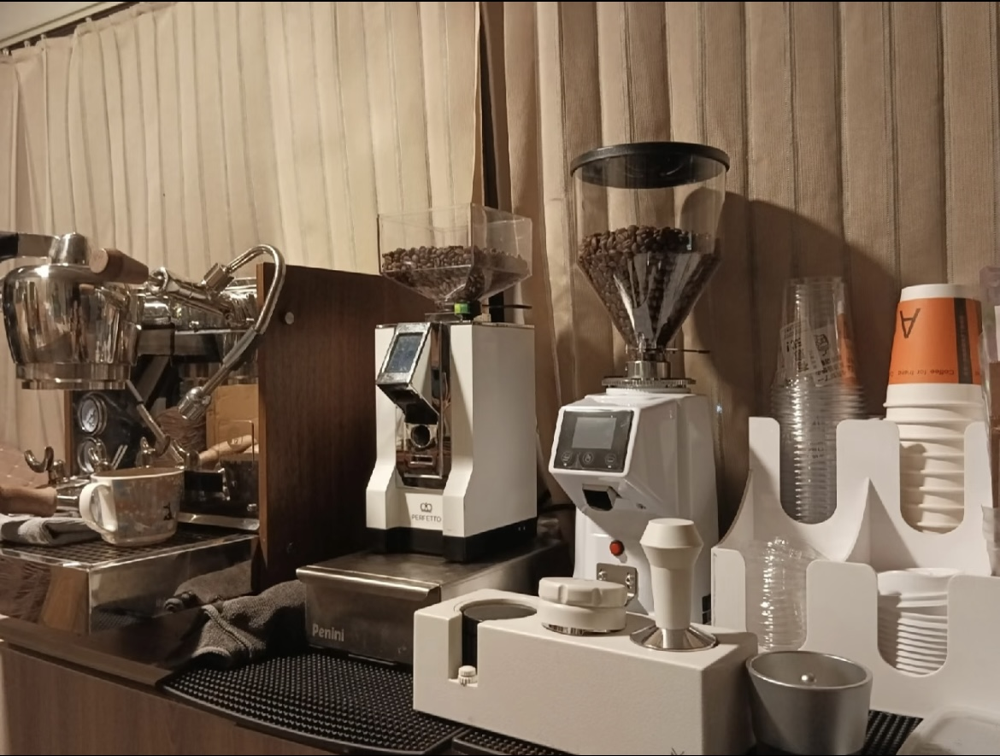

Section 1：市场洞察与项目冷启动
商业假设
发现特定 LBS（地理位置）场景下「最后 100 米」的供给缺口——高中校区周边和图书馆等特定场所，存在大量有咖啡消费需求但供给严重不足的空白市场。固定门店成本高、进入壁垒强，而移动咖啡车可以用极低的试错成本快速验证这一假设。
冷启动执行
- 撰写商业计划书（BP），成功完成融资 11 万元，验证了商业逻辑的可信度
- 组建 4 人团队，分工覆盖运营、咖啡师、采购、推广
- 以「单点盈利验证」为第一里程碑，避免过早规模化

↑ 咖啡车实际作业设备——Perfetto 磨豆机 + 专业意式机 + 杯架系统，确保高峰出品效率与品质稳定性
Section 2：LBS 场景的敏捷测试与坪效管理
动态选址策略
将咖啡车视为「线下流量测试插件」——每个点位都是一次 A/B 测试。选址决策框架：流量密度 × 消费意愿 × 竞品空白度，快速进入多个高潜区域进行验证，而非依赖经验判断。
数据导向决策
- 持续追踪每个点位的日均销量、高峰客单价、复购情况等核心指标
- 基于坪效数据，果断裁撤低效网点，将资源向高 ROI 区域集中配置
- 高校附近点：日均 30–40 杯，早高峰效率最高
- 图书馆附近点：日均 40 杯，客单价较高，留存更稳定
- 首月即实现现金流回正，验证了单点盈利模型的可行性
核心认知：线下选址不是「感觉」，而是一套可测量、可迭代的决策框架。每一次搬迁都是用数据说话的产品迭代。
Section 3：增长黑客与私域运营
获客降本（CAC 优化）
- 建立「异业联盟」，与周边文具店、书店等商户资源置换，实现零成本曝光
- 设计「首杯半价」钩子产品，降低新客尝试门槛，驱动首次转化
- 口碑裂变：老客带新客机制，沉淀 100+ 固定客户形成自然增长飞轮
私域留存（LTV 提升）
- 将流量沉淀至微信群组，进行精细化运营：限时优惠、新品预告、天气关怀推送
- 核心时段复购率达 80%–90%，形成高净值忠实用户群
- 基于用户反馈持续测试饮品组合与新品方向，打造 20+ 款爆款产品
Section 4：业务复盘与产品化思考
核心认知
深刻理解「流量 × 转化率 × 客单价」的商业漏斗本质。选址解决流量问题，产品和服务解决转化问题，私域运营解决复购和客单价问题——三者缺一不可。
产品化延展：从咖啡车到小程序构想
运营过程中洞察到线下实体极强的「潮汐效应」痛点——早高峰大排长龙，非高峰时段闲置。这催生了一个产品构想：
「精确到分钟的错峰预订」小程序
用户提前预订 + 选择取餐时间 → 拉平峰谷，减少排队 → 提升整体人效与用户体验 → 为商家创造可预测的收入流。本质是用数字化工具解决线下服务的时间分配问题。
这个产品构想直接影响了我对 O2O 产品、LBS 场景和服务型小程序设计的深度思考，也是我在 Product Lab 中进一步推进的概念原型方向。
延伸阅读 · Product Lab
已基于本项目痛点设计交互原型
「极速预约」小程序的完整概念原型与产品分析，已在 Product Lab 中持续更新。
前往 Product Lab →
核心收获
- 在资源受限的条件下完成 0→1 验证，建立了对商业可行性的直觉判断
- 真实理解了用户留存和口碑裂变的运作机制，而不只是概念
- 从线下场景洞察出数字产品机会——这是 PM 最核心的能力之一
- 体验了完整的创业闭环：融资→执行→数据→迭代→盈利